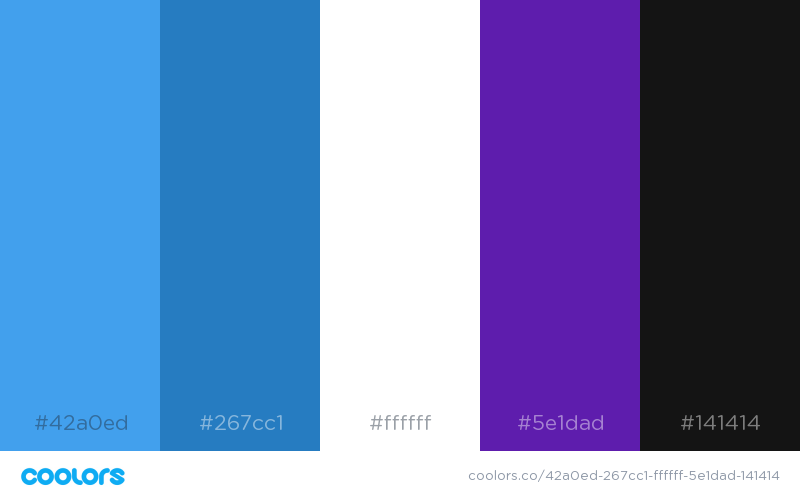
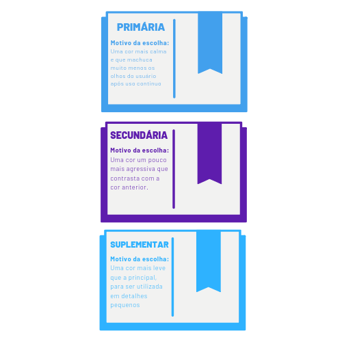

Identidade Visual
Histórico de Revisãp
| Data | Versão | Descrição | Autor(es) |
|---|---|---|---|
| 01/09/19 | 0.1 | Criação do documento | Rafael Makaha |
| 05/09/19 | 0.2 | Explicação das cores | João Rossi |
| 05/09/19 | 0.3 | Método de geração da paleta | João Rossi |
| 05/09/19 | 0.4 | Análise de cores | João Rossi |
1. Introdução
A Identidade Visual representa a familiarização das pessoas com o projeto. As cores presentes em uma logo ou em um aplicativo influenciam diretamente no humor e aceitação dos que as vêem.
2. Paleta de Cores
As cores da nossa paleta foi montada na plataforma coolors, em que geramos paletas e depois modificamos a mesma com base na opinião pessoal da pessoa que está por trás da montagem da paleta.

Análise das cores principais
Aqui fizemos uma rápida análise com uma mostra gráfica das cores, antes de explicarmos o uso delas mais detalhadamente.

3. Cores e Emoções
Cada cor pode transmitir uma emoção direta para o alvo que a vê. Como a proposta do projeto é relacionada ao campo educacional, a equipe optou por selecionar cores voltadas a segurança e sabedoria, além de possibilitarem o usuário a utilizar a plataforma por um maior periodo de tempo sem cansar muito sua vista.
4. Motivos da escolha de cada cor
Explicaremos o porque da escolha de cada cor:
-
Azul (#42a0ed, #267cc1): Azul é uma cor calma, que facilita a execução de tarefas mentais e, principalmente, não cansa os olhos.
-
Branco (#ffffff): O branco é uma cor padrão, ótima para dar um contraste e servir como plano de fundo para não atrapalhar a conjuntura total das cores utilizadas
-
Roxo (#5e1dad): O roxo é uma cor que combina bem com o azul, sendo uma cor mais elegante e enigmática, contrastando com a calma que o azul transmite.
-
Preto (#141414): Assim como o branco, é uma cor padrão, sendo necessária para complementar as outras em alguns momentos.